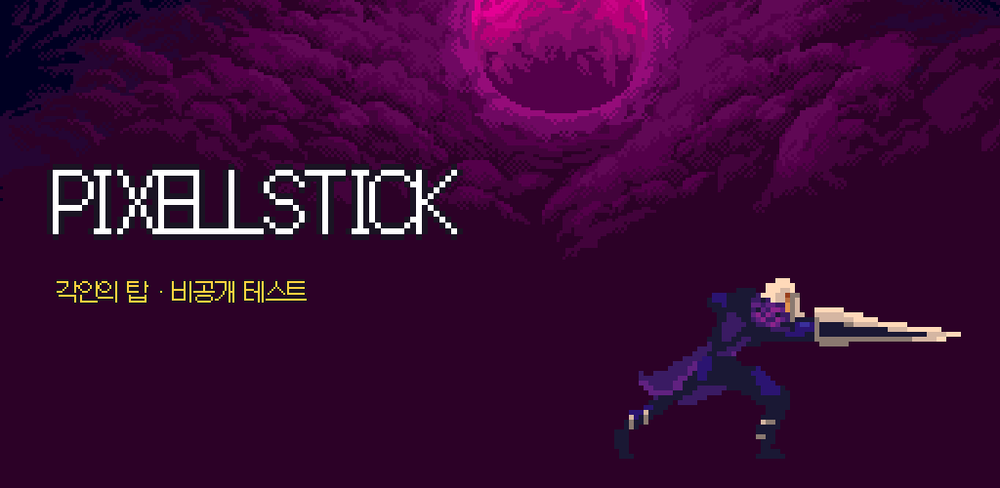
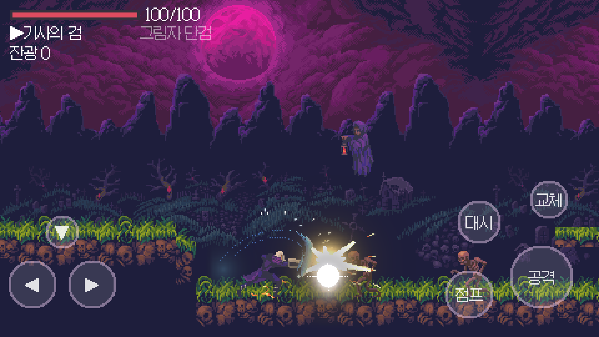
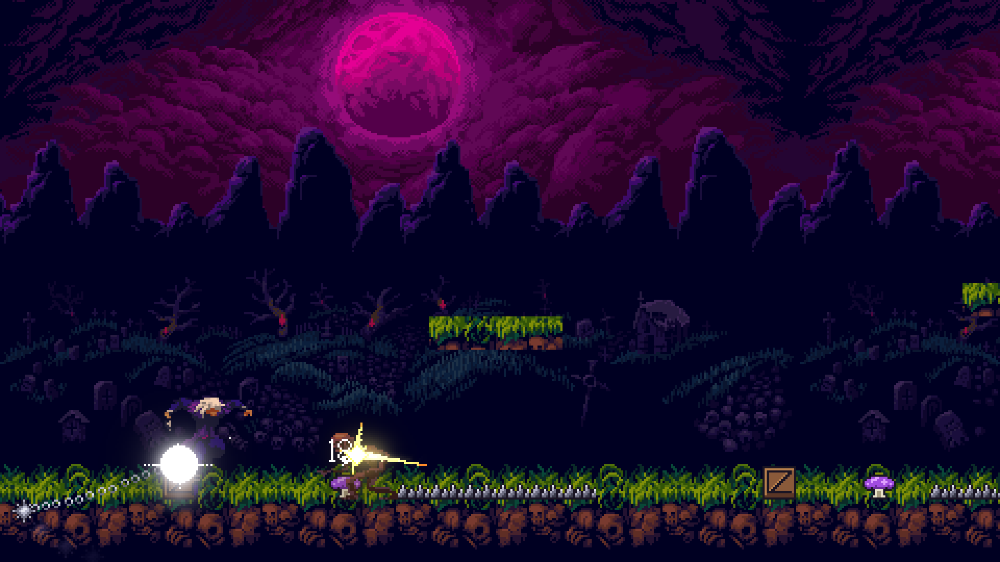

비공개 테스터를 모집합니다
적의 각인을 빼앗아 매 판 다른 무기로 무너진 탑을 오르는 2D 픽셀 액션 로그라이트입니다. 아직 개발 초기 빌드라 거칠지만, "한 판 더 하고 싶은가"를 확인하려고 합니다.


참가 방법 (Android)
- 테스터 그룹 가입 — Play 스토어에 쓰는 Google 계정으로 가입하세요.
테스터 그룹 가입하기 - 테스트 참여 수락 — 가입한 같은 계정으로 아래 링크에서 "테스터 되기"를 누르세요.
테스트 참여 - 설치 — Play 스토어 페이지에서 설치합니다. (수락 후 반영까지 몇 분 걸릴 수 있어요)
- 14일 동안 지워 두지 말아 주세요 — 출시 조건이 "테스터 12명 이상이 14일 연속 참여"입니다. 매일 안 해도 괜찮아요.
부탁드리는 것
- 한 판(약 15분) 이상 플레이
- Play 스토어 앱 페이지의 "비공개 의견 보내기"로 느낀 점 남기기 — 특히 "한 판 더 하고 싶었나요?"
- 버그는 기기 모델과 함께 알려 주세요
알아 두세요
- Android 7.0 이상 · 가로 화면 · 터치 버튼 조작
- 광고·결제 없음, 개인정보를 수집하지 않습니다 — 개인정보처리방침
- 세이브는 업데이트 중 초기화될 수 있습니다
- iOS(TestFlight)는 아직 준비 중입니다